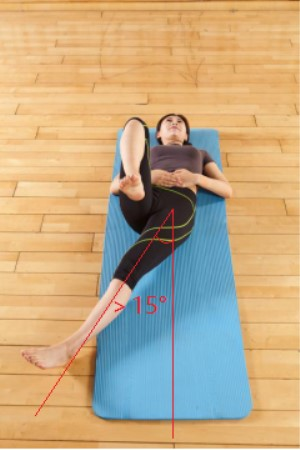
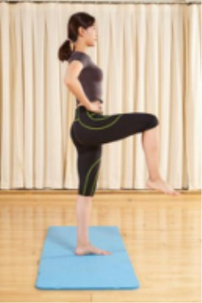
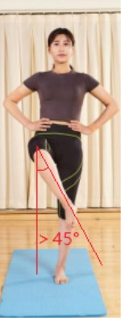
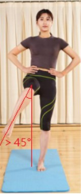
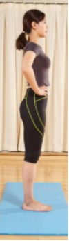
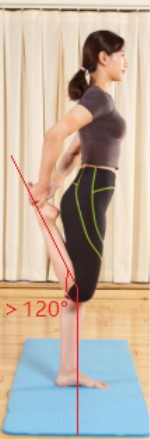

3
风险筛查
5
髋关节活动度测评--内收

受试者仰卧于垫子上，一腿抬起，另一腿伸直并向内侧移动，内收至膝关节达到另一侧髋关节正下方。内收角度大于15°为正常，小于15°为受限。
不受限
受限
6
髋关节活动度测评--内外旋

受试者站立，一腿抬起至大腿与地面平行，小腿自然下垂，保持膝关节位置不变；

小腿向内侧摆动（为外旋），足跟超过对侧膝盖外缘水平，外旋大于45°为正常；

小腿向外侧摆动（为内旋），角度大于45°为正常。内、外旋角度小于45°为受限。
不受限
受限
7
髋关节活动度测评--内外旋-俯卧
俯卧位，屈膝90°（小腿垂直床面），外旋（足向内转）45°、内旋（足向外转）60°
不受限
受限
8
膝关节活动度测评--屈伸

受试者双腿并拢直立，一腿屈膝，即小腿向后抬起（可用手扶足辅助抬起），然后伸直；

抬腿角度大于120°且膝关节可伸直为正常，小于120°或不能伸直为受限。
不受限
受限
上一步